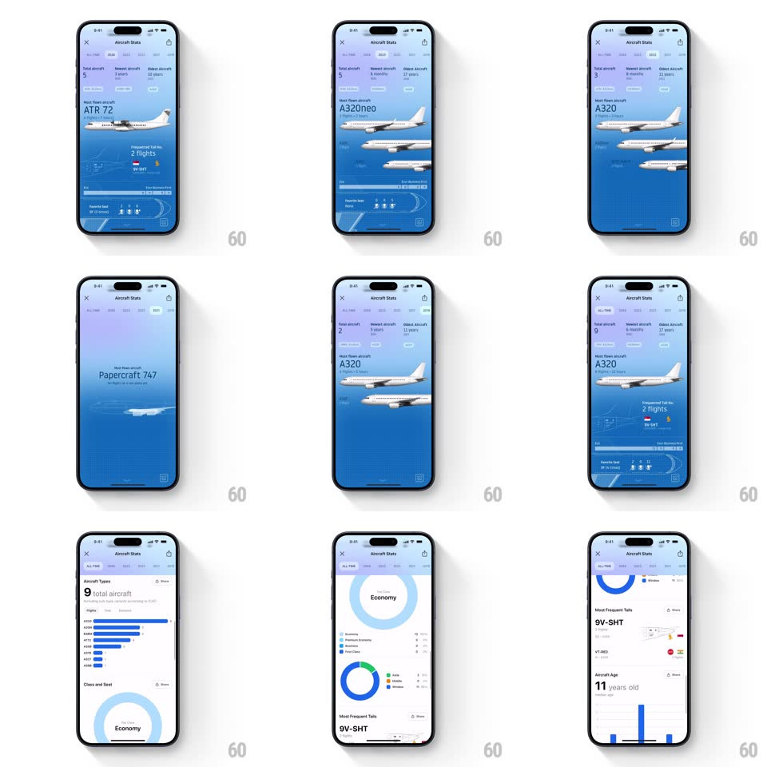

Media
Frame-by-frame

Rebuild this interaction 1:1: Flighty's Aircraft Stats - a blue aviation dashboard where tab switches spring-swap 3D aircraft illustrations over a blueprint backdrop, with stat trios up top and scrolling white cards holding animated type bars, drawing donut charts, frequent-tail rows, and aircraft age.

Rebuild this interaction 1:1: Flighty's Aircraft Stats - a blue aviation dashboard where tab switches spring-swap 3D aircraft illustrations over a blueprint backdrop, with stat trios up top and scrolling white cards holding animated type bars, drawing donut charts, frequent-tail rows, and aircraft age. ## Integration Integration: stack-agnostic spec - springs given as stiffness/damping, timed motions as duration + curve; map every value to your framework and animation library of choice. ## Scene Blue "Aircraft Stats" page: a stat trio (Total aircraft 9 / Newest 6 months / Oldest 11 years), then "Most flown aircraft A320" with a large 3D plane render over a blueprint-style line-drawing background (seat map schematics, registration details "9V-SHT", a favorite-seat diagram). Scrolling reveals white cards: "Aircraft Types 9 total aircraft" horizontal bars, "Class and Seat" donut chart with legend, "Most Frequent Tails 9V-SHT" rows with tail-fin thumbnails, "Aircraft Age 11 years old". ## Motion spec Pattern: springy illustration swap + drawing charts. - Tab switch: the current plane springs out (scale 1 -> 0.85 + 30px lateral slide, fade, spring ~340/16 with a hint of overshoot on exit) while the new plane springs in from the opposite side (spring ~320/14 - a lively, toy-like swap); the blueprint backdrop crossfades (300ms) and the stat trio re-rolls (digit roll 500ms). - On scroll-reveal, each white card rises 20px and fades in (spring ~340/20). - Type bars grow from zero width (400ms ease-out, 60ms stagger); the donut chart draws its ring stroke-on (700ms, clockwise from top) as the legend rows stagger in (150ms, 60ms apart). - The plane idles with a slow bob (4px, 4s sine) - a parked aircraft with a pulse. ## Calibration - The plane swap is springy, not linear - it should feel like trading cards snapping in. - Donut draws once per reveal; re-scrolling does not redraw. ## Reduced motion Planes crossfade in place; charts appear complete; no idle bob. ## Don't miss - The blueprint backdrop - technical drawings behind the hero plane give the page its aviation-nerd soul. - Tail-fin thumbnails in the frequent-tails list - tiny aircraft identity, not generic icons.